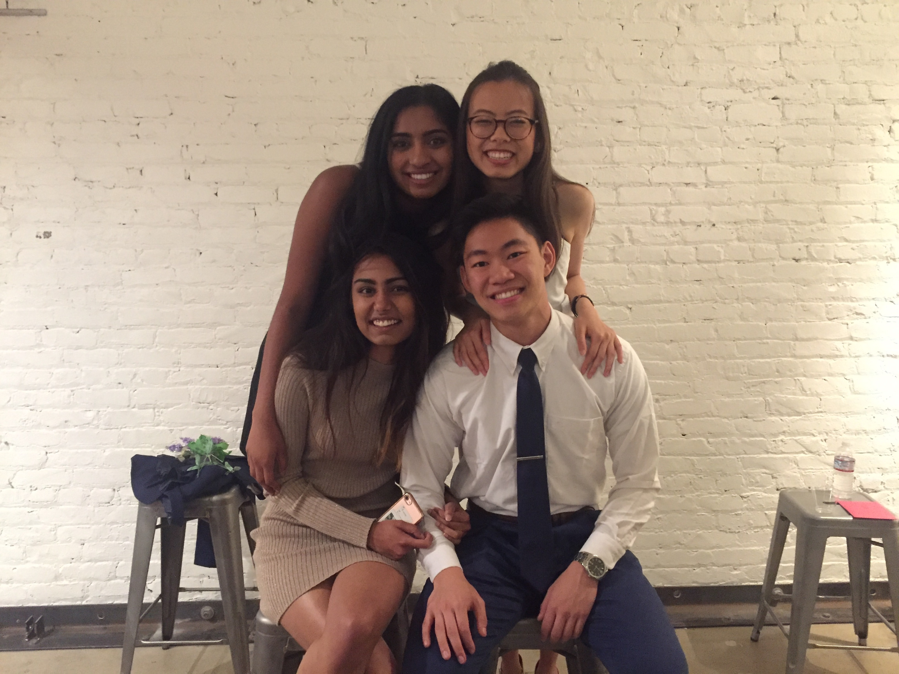
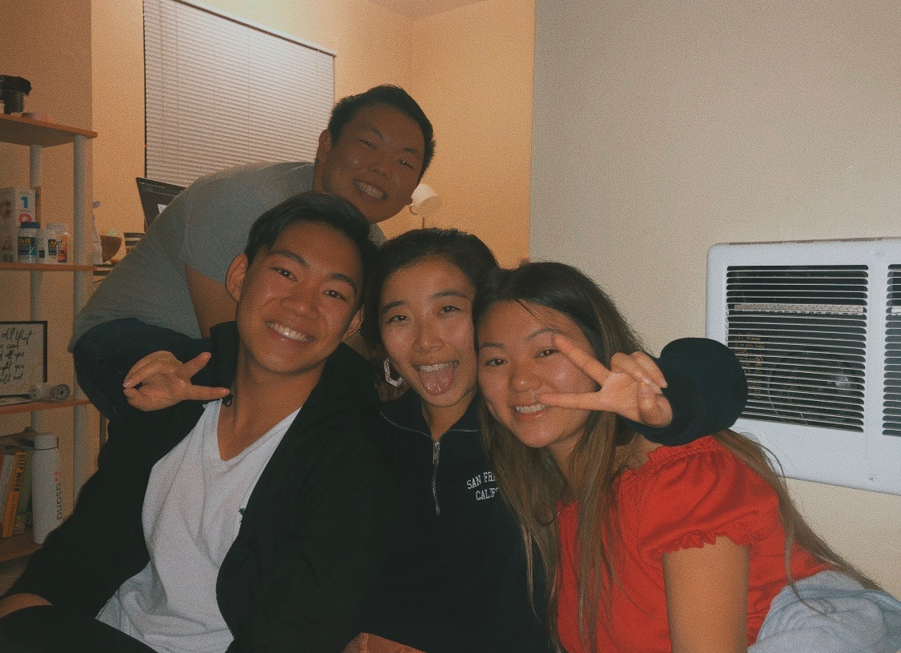
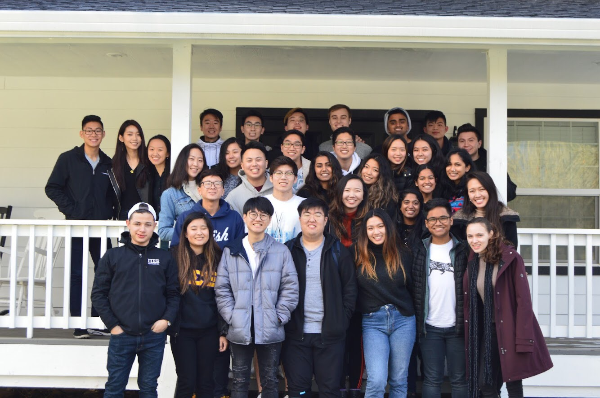
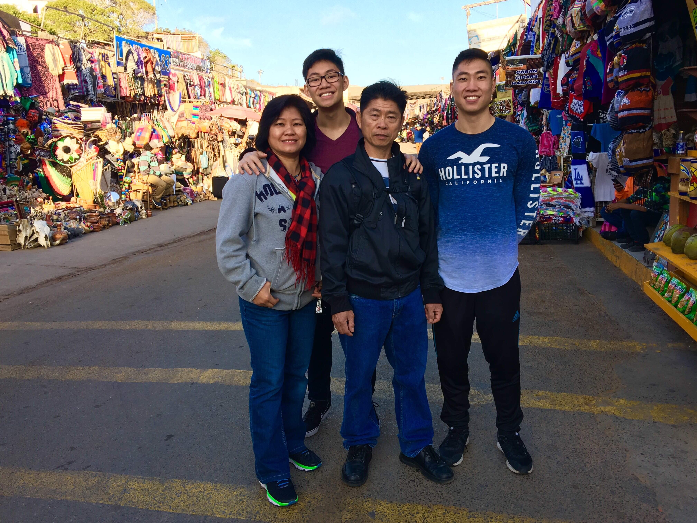
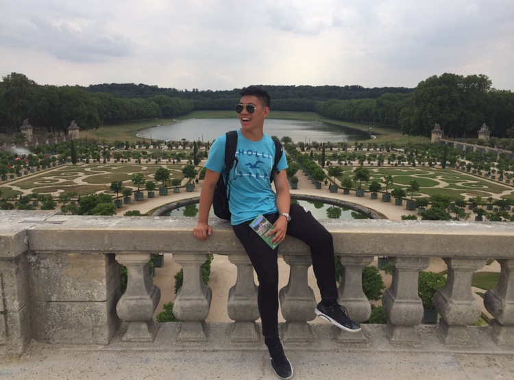

About Me
Hello! My name is Edward Chen and I am currently a Junior at UC Berkeley majoring in Environmental Economics and Policy and minoring in Sustainable Design. I grew up in my hometown in Fresno, but I've come to love the Bay Area. I have a strong passion for marketing, consulting, and product design. Though I have a wide range of interests, a lot of the technical skills within fall hand in hand. I believe that diversifying my skills is the best way to gain the greatest perspective when tackling real-world problems. My interest in business and design revolves around innovation and I strongly believe that understanding who we are designing for can improve the human experience for everyone. What I hope to achieve is meaningful work and to have an impact in the world
I am currently a Design Consultant at Berkeley Innovation. I also work in Content Marketing for YYF Medias and Project Manager for ZC Consulting. This past summer, I worked in Congress as a congressional aide, helping manage marketing, finance, and user research. In past semesters, I worked as a remote campaign marketer for the Congressional Office of Jim Costa and worked on various freelance projects for different clients doing social media marketing and analytics. I also participated in numerous case competitions, placing 1st in the L.E.K. Finance Case Comp as well as 1st in the IpVive Marketing Challenge.
I am motivated, driven, and enthusiastic to learn about the world and what opportunities lie ahead. Most people describe me to have exceptional skills in project management, public relations, and leadership. In my free time, I enjoy playing volleyball (I'm part of an intramural team on campus!), acoustic fingerstyle guitar (Been playing since the 3rd grade), and Taekwondo (1st Dan Black Belt).
Want to learn more?
Check out my LinkedIn and resume or contact me at edwardchen14@berkeley.edu or (559)400-9765!
I am currently a Design Consultant at Berkeley Innovation. I also work in Content Marketing for YYF Medias and Project Manager for ZC Consulting. This past summer, I worked in Congress as a congressional aide, helping manage marketing, finance, and user research. In past semesters, I worked as a remote campaign marketer for the Congressional Office of Jim Costa and worked on various freelance projects for different clients doing social media marketing and analytics. I also participated in numerous case competitions, placing 1st in the L.E.K. Finance Case Comp as well as 1st in the IpVive Marketing Challenge.
I am motivated, driven, and enthusiastic to learn about the world and what opportunities lie ahead. Most people describe me to have exceptional skills in project management, public relations, and leadership. In my free time, I enjoy playing volleyball (I'm part of an intramural team on campus!), acoustic fingerstyle guitar (Been playing since the 3rd grade), and Taekwondo (1st Dan Black Belt).
Want to learn more?
Check out my LinkedIn and resume or contact me at edwardchen14@berkeley.edu or (559)400-9765!




